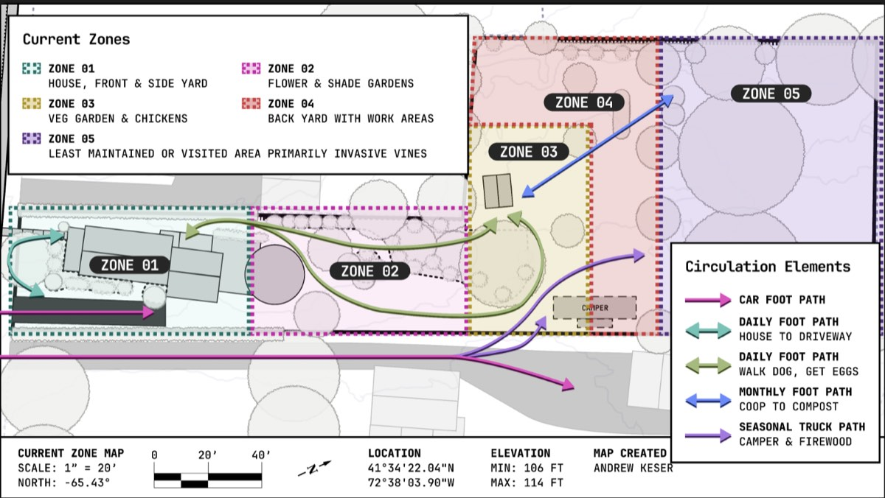
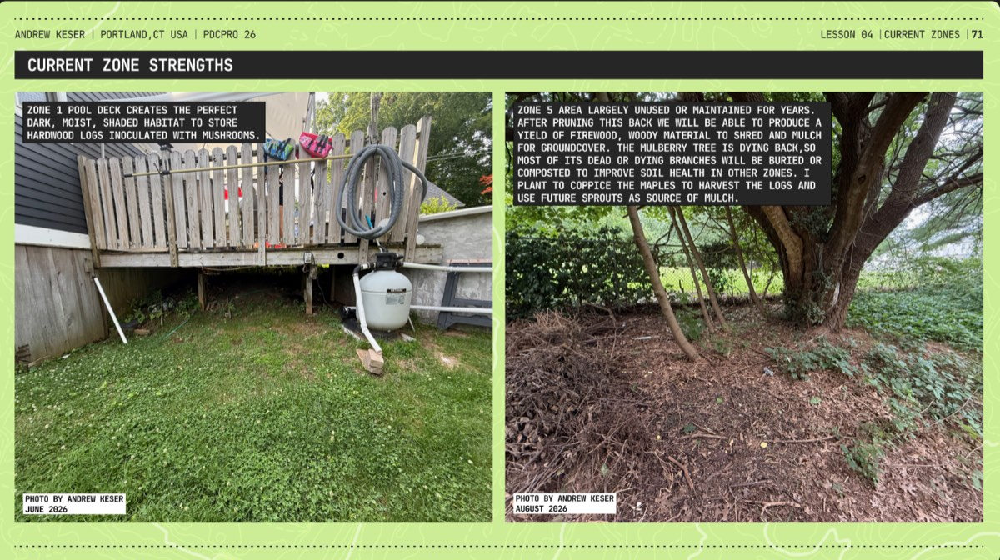
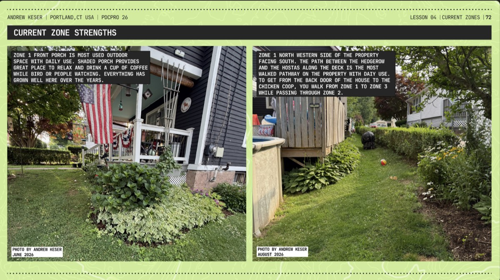

The five permaculture zones as they exist today — Zone 01 (most intensively used, closest to the house) through Zone 05 (least visited, wild) — with the existing-conditions matrix, photos, and a SWOT analysis of the current layout.

Current Zone Map — scale 1" = 20', north -65.43°, location 41°34'22.04"N 72°38'03.90"W, elevation min 106 ft / max 114 ft. Circulation: car foot path; daily foot path house-to-driveway; daily foot path walk dog/get eggs; monthly foot path coop-to-compost; seasonal truck path camper & firewood.
Map created by Andrew Keser, August 2026.
| Zone | Definition |
|---|---|
| Zone 01 | House, front & side yard |
| Zone 02 | Flower & shade gardens |
| Zone 03 | Veg garden & chickens |
| Zone 04 | Back yard with work areas |
| Zone 05 | Least maintained or visited area, primarily invasive vines |
| Zone 01 | Zone 02 | Zone 03 | Zone 04 | Zone 05 | |
|---|---|---|---|---|---|
| Description | House, front and side yards | Shade and flower gardens | Veg garden and chicken coop | Back yard and work areas | Unmaintained wild area |
| Frequency of visits | Daily | Daily | Daily | Weekly | Rarely visit prior to this course |
| Theme / active primary | Living area, home access, song bird feeding area | Ornamental flowering plants and trees | Growing vegetables & herbs, chickens | Wood piles, fire pit, brick oven | Mature trees, overgrown invasive vines & shrubs |
| Water | Water connection, spigot with 150ft hose | Within range of watering system | No current water connection | No water system in reach | Never watered |
| Structures | Single family home | Stone walkway, above ground pool & pool deck | Chicken coop, tool shed, feed storage, fencing | Fire pit, brick oven, camper | Not applicable |
| Plants / plant systems | Ornamental flowers and shrubs, shade tree | Shade trees, perennial flowers & shrubs | Herbs & vegetables | Grapes, blueberries, apple trees, peach tree, lawn grass | Mature oaks, Norway spruce, eastern pine, invasive ground cover |
| Animals | Domesticated dogs & cats, squirrels, birds, skunks, raccoons | Same as Zone 01 | + domesticated chickens, groundhogs, red fox | + coyote, deer, raptor birds | Same as Zone 04 |
| Additional considerations | Annual plantings in place can be replaced with perennials | Mature trees starting to compete, need to decide what stays | Overgrown property lines provide too much shade for grow beds | Willing to reduce total lawn coverage in favor of lower maintenance option | Covered in poison ivy, Virginia creeper & Asiatic bittersweet |

Zone 1 pool deck creates the perfect dark, moist, shaded habitat to store hardwood logs inoculated with mushrooms.
Zone 5 area largely unused or maintained for years. After pruning this back we will be able to produce a yield of firewood, woody material to shred and mulch for groundcover. The mulberry tree is dying back, so most of its dead or dying branches will be buried or composted to improve soil health in other zones. I plan to coppice the maples to harvest the logs and use future sprouts as source of mulch.
Photos by Andrew Keser, June & August 2026.

Zone 1 front porch is most used outdoor space with daily use. Shaded porch provides great place to relax and drink a cup of coffee while bird or people watching. Everything has grown well here over the years.
Zone 1 north western side of the property facing south. The path between the hedgerow and the hostas along the deck is the most walked pathway on the property with daily use. To get from the back door of the house to the chicken coop, you walk from Zone 1 to Zone 3 while passing through Zone 2.
Photos by Andrew Keser, June & August 2026.
Strengths
Opportunities
Weaknesses
Threats